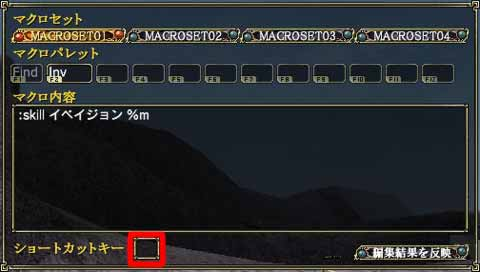

ショートカットキーを設定することで、、F1 ～ F12 以外のキーにマクロの設定することができます。
ショートカットキーを設定するには、マクロ編集の「ショートカットキー」の部分にフォーカスを合わせ、使いたいキーを押します。押したキーがショートカットキーに登録されれば成功です。登録を解除するときは、フォーカスを合わせた状態で、登録したキーを押します。
キーボードの1,2,3・・・のあたりに登録することで、FPSをやったことのある方は多少快適になるかもしれません。ただしキーコンフィグですでに設定したキーを、マクロとしてショートカットキーに設定すると、キーコンフィグで設定した機能が使えなくなります。
この方法をうまく使うことで、マクロパレットを変更せずに、他のマクロパレットに登録したマクロを使うことができます。以前はショートカットキーを使うと、自動的に登録されていたマクロパレットが呼び出されましたが、現在のバージョンではそのようなことは起きません。
 |
|